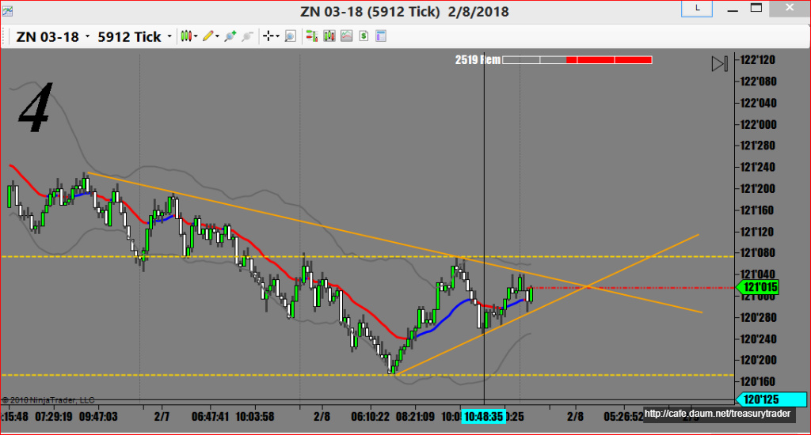
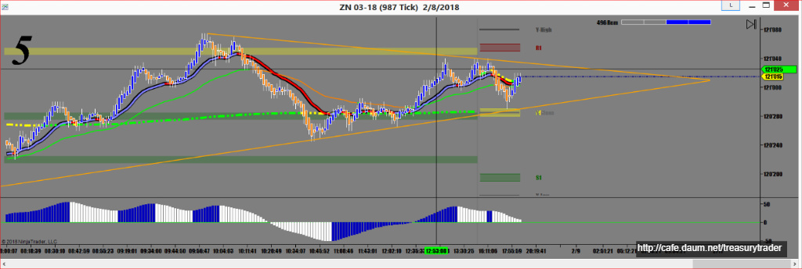

오늘은 새벽2시부터 매매를 한 관계로 좀 자야되는데
지금 챠트보고 있는데 ZN(10년물)이 그림같은 삼각형을 만들고 있군요


ZB(30년물)가 피봇의 교과서라면 ZN은 피봇과 추세선을 둘 다 활용해야하는 선물입니다
피봇에서 설 수도 있고 안설 수도 있습니다.^^
그대신 챠트에서 보는것처럼 단기 추세선은 굉장히 잘지키는 독특한 선물입니다
선물에 따라서 각기 성격(character)이 있습니다
움직임도 각기 다르고 뉴스에 반응하는 모습도 다 다릅니다
ZN은 한 호가에 1000 Lot 이상 걸려있는 경우가 많아서 일단 방향을 정하면
여간해서는 뒤로 빼지않고 그냥 갑니다
그래서 진입할때도 마켓오더로 무조건 포지션을 잡아야합니다
다른 선물처럼 뒤쪽에 넉넉히 주문을 넣고 좋은 가격에 사보려고 기다리다가는
매매를 못하는 경우가 많습니다
덕분에 손절주문을 2틱 정도까지 짧게 잡을 수가 있어 실패해도 손실이 적습니다
하지만 Behavior가 마치 할아버지 같아서 정말로 하품이 나는 고리타분한 선물입니다
그래도 인내심이 많고 기술적분석에 뛰어난 전문 트레이더들에겐
매매 성공률이 아주 높은 최고의 선물이기도 합니다